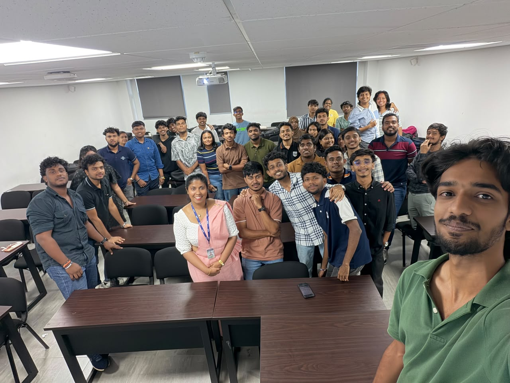

PROFESSIONAL SKILLS / SESSION 11
Negotiation Skills
Reaching win-win outcomes in studies, career, and everyday life.
Overview
This Professional Skills workshop focused on negotiation skills and their role in achieving win-win outcomes in studies, careers, and everyday life.
Learning outcomes
- Examine the types of negotiating skills.
- Understand the importance of negotiation skills for professional development.
- Explore how negotiation can support win-win outcomes in studies, careers, and everyday life.
Activities
Coloured Paper Exchange
Each group received a cup containing pieces of paper in different colours. We chose one colour and approached other groups to collect the pieces we needed. The challenge was that we could not speak to members of the other groups, so we had to communicate through signs and gestures.
After several minutes, we were allowed to speak with one another and ask for the coloured paper we wanted. This gave us an opportunity to experience negotiating both without words and through conversation.
One Word and Emojis: Requesting Leave
For the second activity, we created a WhatsApp group and practised communicating with a manager to request leave. We could use only one word, and the rest of the message had to be emojis. The challenge was to make our request clear with very limited words.
My reflection
This session helped me understand the importance of effective communication, active listening, and finding solutions that benefit everyone. I learned how to negotiate confidently, respect different opinions, and reach agreements professionally.
Moments from the workshop

